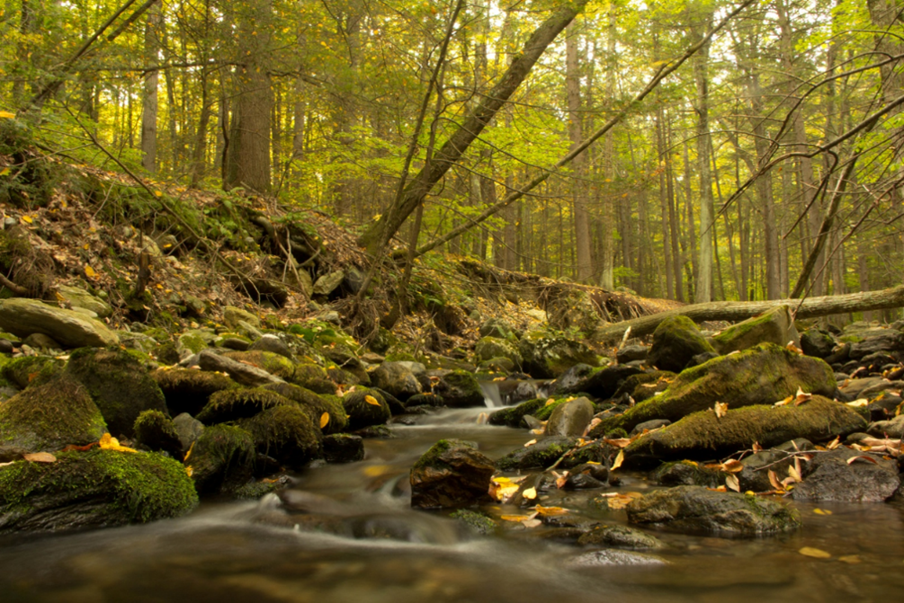
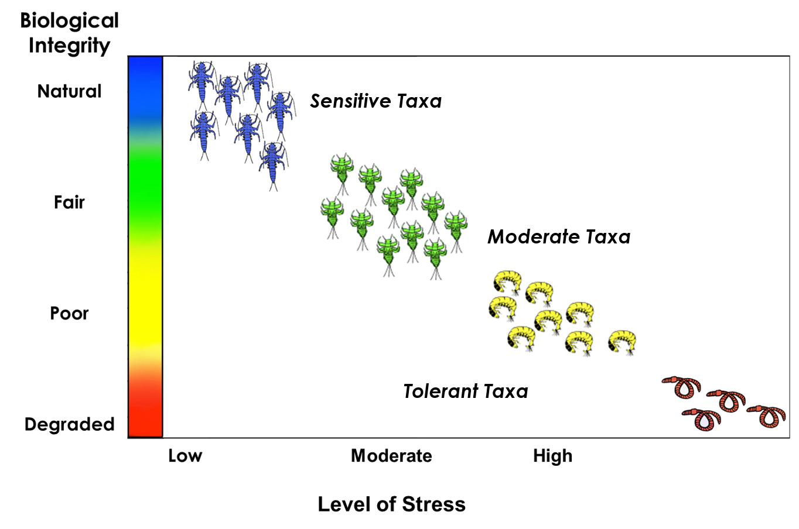
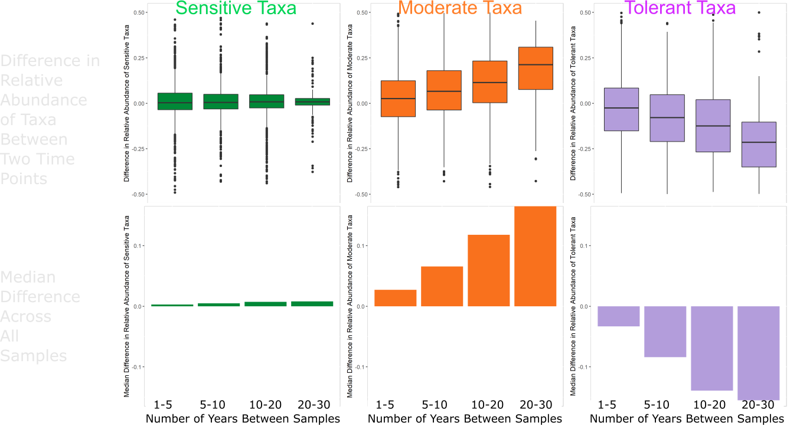
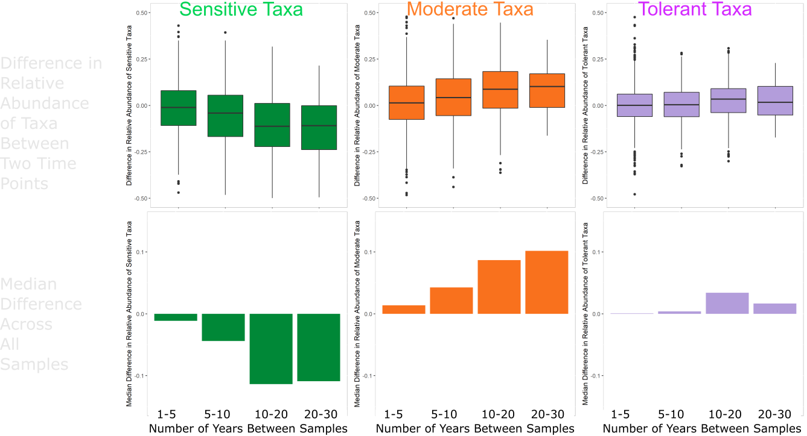
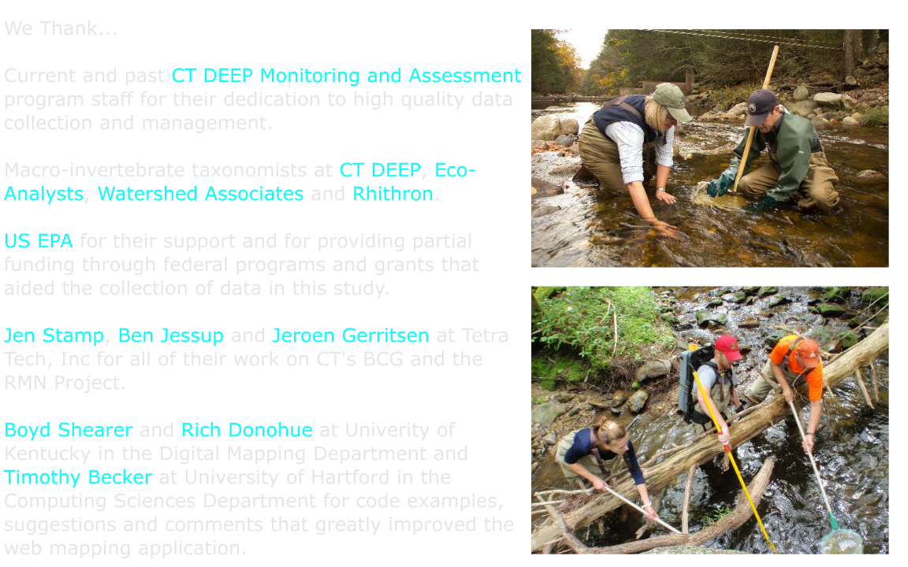
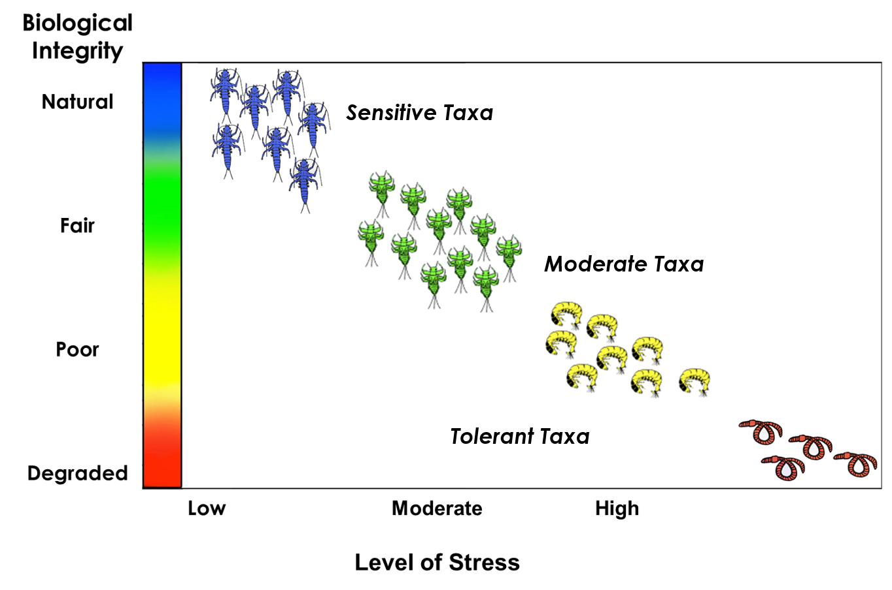
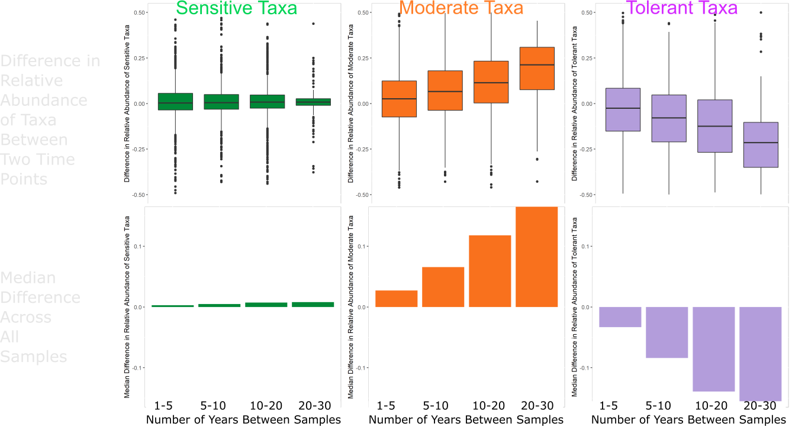
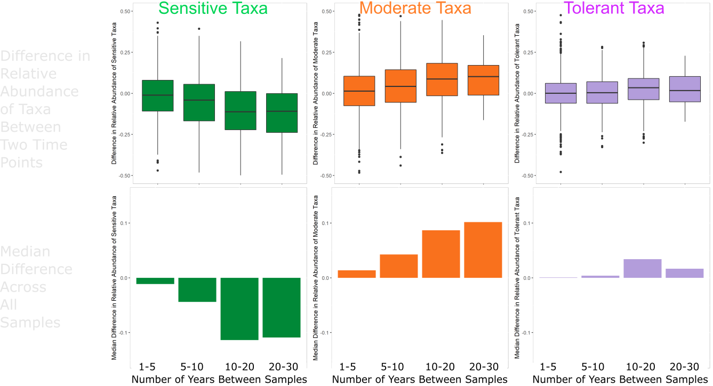
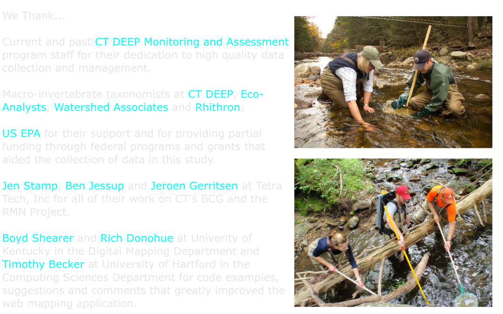

Clean Water Act Implementation Progress and Needs for Continuing Success in Connecticut
Informing High Water Quality Protection
Mary Becker and Christopher Bellucci
Monitoring and Assessment Program, Bureau of Water Protection and Land Reuse
Northeast Aquatic Biologist Conference - March 5, 2021
Willimantic River, Stafford CT 1960s (left) and 2000s (right)

Biological Condition Gradient (BCG)

Historic Assessments

Biological Condition Gradient Assessments

Macroinvertebrate Biological Condition Gradient

https://marybecker.github.io/Biointegrity/

Multi-Year Macroinvertebrate Sites 1989-2019

Example - Difference in Relative Abundance (RA) Across All Sample Combinations
Multi-Year BCG Tier 5 Sites

Multi-Year BCG Tier 2 Sites

Landscape Changes at BCG Tier 2 Sites

Landscape Changes at BCG Tier 2 Sites

Landscape Changes at BCG Tier 2 Sites


Landscape Changes at BCG Tier 2 Sites

Landscape Changes at BCG Tier 2 Sites

Protected Open Space in BCG Tier 2 Watersheds
Chemical Changes at BCG Tier 2 Sites

Chemical Changes at BCG Tier 2 Sites

Temperature Changes at Tier 2 BCG Sites
Temperature Changes at Tier 2 BCG Sites
Work In Progress

Acknowledgements

References
FOSS Technology Stack
Questions / Comments
Sages Ravine Brook, Salisbury CT

Difference in Relative Abundance of Sensitive
, Moderate and
Tolerant Taxa
Year 1 - Most recent Year in Combo
Year 2 - Second Year in Combo
Year 1 RA - Year 2 RA = Difference (Diff)
Example - Natchaug River. Sample Years 1994,2005,2014. Relative Abundance Sensitive Taxa.
| Year 1 | Year 2 | Diff (Yrs) | RA Yr 1 | RA Yr 2 | Diff (RA) |
|---|---|---|---|---|---|
| 2014 | 1994 | 20 | 0.37 | 0.53 | -0.16 |
| 2014 | 2005 | 9 | 0.37 | 0.02 | -0.16 |
| 2005 | 1994 | 11 | 0.35 | 0.53 | -0.18 |



Davies, S.P., and S.K. Jackson. 2006. The Biological Condition Gradient: A descriptive model for interpreting change in aquatic ecosystems. Ecological Applications 16:1251–1266.